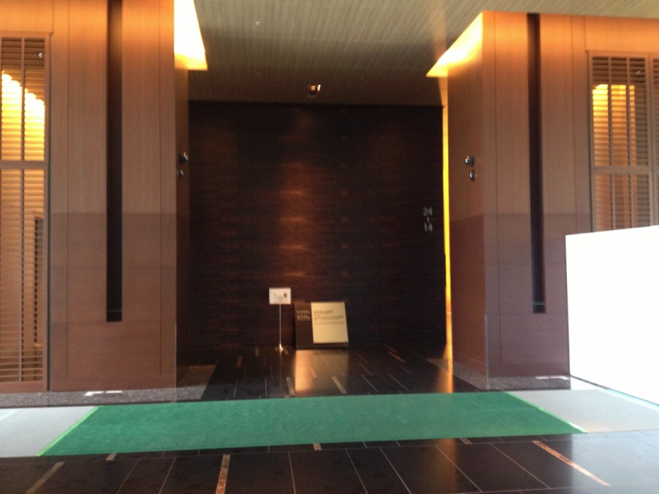

Python Developers Festa2013.07に参加しました #pyfes¶
Python Developers Festa2013.07に参加しました 当日は大きく分けて
ハンズオン、野良ハンズオン
発表(プレゼン、LT)
が行われました。
{kind=link}
写真はゲートがなくなっていたので記念に撮りました。
前回の様子¶
Python Developers Festa2013.03に参加しました #pyfes — kashew_nuts-blog
午前中〜プレゼン開始まで¶
fabricハンズオンに参加しました。
ハンズオン資料: drillbits/pyfes_fabric
要点メモ
fabなんでもできるけど、なんでもやり始めたら負け。
繰り返し同じ環境を作るなら(冪等性を確保したいなら) ansible や chef
chef, ansible はきちんと設計。毎回同じ環境。
fabtools でゆるい依存関係を保つ。
require tools で必要なツールを指定。冪等性はない。
fabric 周りの人はUbuntuの人が多い。chefもレシピがUbuntuメイン。
cuisine, fabtools を入れるとインストール周りの冪等性を担保してくれたり便利。
発表(プレゼン, LT)¶
14:10頃から開始。発表の数も多くなかったこともあり、順調に進んだ気がします。18:00には終了。
@ryu22e PyCon APAC 2013 in Japan 開催します！¶
Webエンジニア JavaとかPythonとか
PyCon ってそもそもなんだろうという話
世界各国で開催されている。Python の国際的なカンファレンス
今年は PyCon Apac を日本でやります
テーマ:「The Year of Python」
英語のトラックを増やします。初級者〜上級者まで楽しめる
場所, 日程: 工学院大学新宿キャンパス 9/14〜9/16
参加者募集中
@__Egi パターンマッチ指向プログラミング言語 Egison¶
お仕事募集中です。
Egisonとは…世界で初めて集合に対するパターンマッチを直接的に表現することを可能にしたプログラミング言語
パターンマッチとは…「データの分解」とその結果に基づく「条件分岐」を簡潔に表現する
何重にもネストするデストラクタの適用を書かなくてよくなる
Egisonのパターンマッチには非常に広い応用範囲がある
強力なパターンの表現力を活かした大規模データ解析
プログラムの自動並列化による超高速計算
@torufurukawa おまえらこのライブラリ使ってないの？ m9¶
主催からアサインされたタイトルです。
#bucho
最近program書かせてもらえなくない。Excelで仕様書いたり。
仮想環境, Shell環境, コーディングスタイル, テストについて。 追加は #pyfes #m9 でツイートして下さい。
仮想環境: virtualenv(2.x), venv(3.x), virtualenvwrapper(2.x, 3.x)
対話Shell拡張: Python ls とか cd とかできる。
コーディングスタイル: pep8, pyflakes, flake8 (pyflakes+pep8), misspellings
便利モジュール: requests (urllib わかりにくい) requests.json()が便利。postとかもある。
テスト: py.test エラーをきれいに見せてくれる。watchdog を使ってファイル監視も実施。
@ojodotch Django CMS¶
Django CMS core developer
英語ワカラナイ。のでTweetから引用。
http://twitter.com/eslar/status/361004870733533184
http://twitter.com/eslar/status/361007153328291840
http://twitter.com/ymotongpoo/status/361008716788662272
@ajiyoshi Erlang & RTB¶
スライド: Erlang & RTB
RTB…Real Time Bidding 広告の価格をリアルタイムのオークションで決める仕組み
Erlang で作りました。堅牢、安定。軽量プロセス、非同期プログラミングを簡潔に記述
起動方法、設定方法などが共通化、抽象化されているし、 依存関係の初期化や起動は標準で面倒みてくれるんだ。そうErlangならね。
「Erlang は実用的な言語です。」
@oza_x86 Spark/Shark¶
「@shiumachi さんのスライドからパクってきたんですけど」
Spark: 機械学習の処理基盤
Shark: Spark のSQLインターフェース。 Hadoop の Hive。Spark との親和性を重視
Hadoopはお手軽。チェックポイントを自動でとってくれる。
SparkはScalaやPythonで書かないといけない。チェックポイントは自分で。起動は速い。 DSLを書かないといけないので、お気楽には書けない。
@shiumachi Fabric + Amazon EC2 で快適サポート生活¶
実際に仕事でどのように使っているか。
Fabric とは: Python 製のデプロイ・システム管理支援ツール。コマンドをSSHで実行。
ベンダーサポートのメインっ業務は障害対応。検証環境を用意する必要がある。
解決策: fabric + EC2 インスタンス 環境の組み合わせ数が多く、しかも毎回異なる。環境は使い捨て。
EC2インスタンス 安い。永続化できない。(停止したら即削除)
基本VMを使う。EC2はサーバー間の通信の問題や、組み合わせ時の調査
サポートのFabricの使い方「手順書書くよりFabric」「メモ帳に残すよりFabric」
自動・手動のバランスを取りましょう。
@ymotongpoo Packer¶
スライド: 20130727 Packerの紹介 (Python Developers Festa 2013.07) // Speaker Deck
Go が好きです。
Packerってなに？vagrantの作者が作った。Go製。
プロビジョニングツール
vagrantやfabricは基本的なOSイメージの上に設定を行う。 Packerはそもそものマシンイメージを作成する。veeweeとやっていることは近い。
対応プラットフォーム: AWS, DigitalOcean, vmware, virtual box
設定ファイルはJSON形式
プロビジョニングを語る前にマシンイメージのことを考えよう
@moriyoshi¶
JS書いてる方？関数型言語書いてる方？PHPを書いている方？ →3回とも手を上げられた方がいますね。
手続き型言語の良さとは。
思考の過程をコードに表す。→結局は好き好き？
CoffeeScript: JS like な JS を生成する言語。
究極のスクリプト言語、 AtsuoScript 作りました。
「COBOLに強い影響を受けております。」
「抵抗なくJSを書くことができるのでは無いかと」
元ネタ: Mammouth
@hiroki_ninuma¶
Web魚拓の中の人
握力について15分語る
TFCC損傷コワイ。
@tk0miya Sphinx本はじめました。¶
今回の #pyfes はこれで終了です。
Sphinx 本の宣伝にきました。pyfes の大トリって緊張しますね。
Sphinx を専門で扱っている書籍は一冊もでていませんでした。
タイトル: 「はじめてのSphinx」(仮)
9月出版を目標に執筆中。電子書籍として出版予定。
仕事で使い始めたい人 周囲に広めるためにも。
懇談会¶
いってきます。
いってきました。人数が多かったこともあり、2つにわかれることになりました。 店内にいる間に大雨になって外では色々大変だったようですが、こちらはそんなことも気にせず 楽しく過ごすことができました。
終わりに¶
次回の日程は11月頃とのことです。また参加できることを願います。